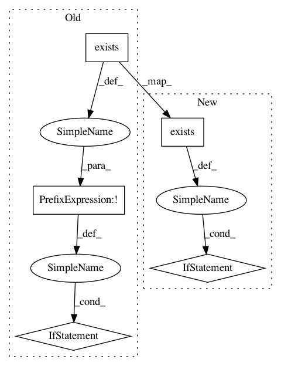

3f196bcdd1e0310208e8978cf4f1fb590614568b,utils.py,,load_model,#,15
Before Change
return os.path.join(storage_dir(), "models", model_name+".pt")
def load_model(observation_space, action_space, from_path):
if from_path == None or not(os.path.exists(from_path)):
policy_net = Policy(observation_space, action_space)
value_net = Value(observation_space)
else:
policy_net, value_net = pickle.load(open(from_path, "rb"))
if ac_rl.use_gpu:
policy_net = policy_net.cuda()
value_net = value_net.cuda()
After Change
def load_model(observation_space, action_space, from_path):
acmodel = ACModel(observation_space, action_space)
if from_path != None and os.path.exists(from_path):
acmodel.load_state_dict(torch.load(from_path))
return acmodel
def save_model(acmodel, to_path):
dirname = os.path.dirname(to_path)
In pattern: SUPERPATTERN
Frequency: 3
Non-data size: 5
Instances
Project Name: lcswillems/torch-rl
Commit Name: 3f196bcdd1e0310208e8978cf4f1fb590614568b
Time: 2018-04-15
Author: lcswillems@gmail.com
File Name: utils.py
Class Name:
Method Name: load_model
Project Name: astroML/astroML
Commit Name: 4227f7c2810a6fc48165311e19a4a6aaac38475e
Time: 2019-04-16
Author: bsipocz@gmail.com
File Name: astroML/datasets/sdss_specgals.py
Class Name:
Method Name: fetch_sdss_specgals
Project Name: akkana/scripts
Commit Name: f02ab4559d2e4e17401b284f8c023e9693d06aa5
Time: 2018-06-24
Author: akkana@shallowsky.com
File Name: quickbrowse.py
Class Name: BrowserWindow
Method Name: set_up_listener